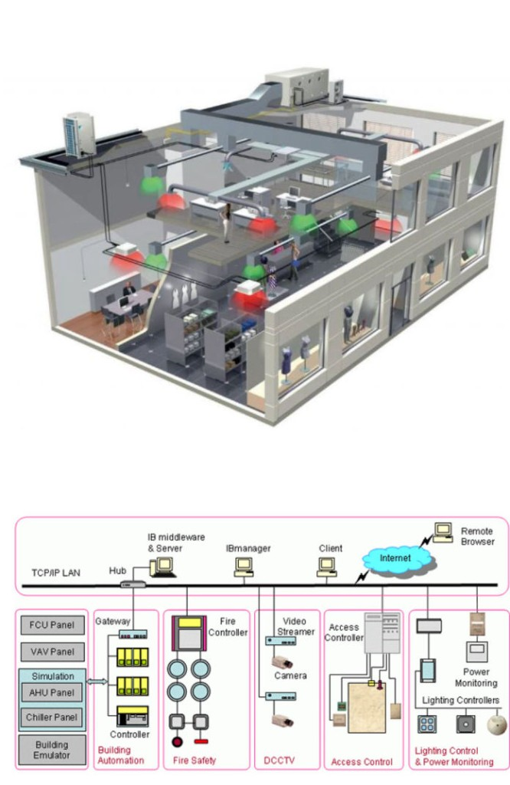
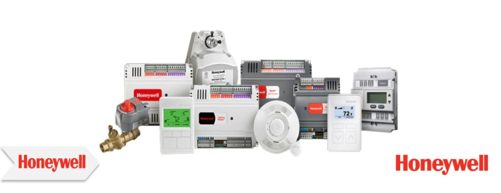

Mekanik OtomasyonMechanical AutomationМеханическая автоматизация
Honeywell Otomasyon ve Kontrol Çözümleri, Türkiye'de en yeni yazılım teknolojilerinin kullanıldığı Honeywell Akıllı Ev teknolojileri, insanların ev güvenliklerini ve çevreyi kendi kişisel cihazları aracılığıyla daha kolay ve verimli bir şekilde uzaktan yönetebilmelerine imkân tanımaktadır. Honeywell Automation and Control Solutions — with Honeywell Smart Home technologies using the latest software in Turkey — enable people to manage home security and their environment remotely more easily and efficiently via personal devices. Решения Honeywell по автоматизации и управлению — технологии Honeywell Smart Home с новейшим ПО — позволяют удалённо и эффективно управлять безопасностью дома и окружением через личные устройства.
Daha büyük ölçekte ise Honeywell Akıllı Bina Çözümleri, hemen her tür binada tüm kontrol sistemlerini bir araya getirerek tek bir kontrol noktasından benzersiz bir verimlilik, güvenlik, konfor ve üretkenlik elde edilebilmesini sağlamaktadır. At a larger scale, Honeywell Smart Building Solutions bring all control systems together in virtually any building type, enabling unique efficiency, security, comfort and productivity from a single control point. В большем масштабе Honeywell Smart Building объединяет все системы управления в здании, обеспечивая эффективность, безопасность, комфорт и продуктивность из единой точки контроля.
- Honeywell'in güvenlik ve enerji yönetim sistemleri, tüm Türkiye'deki önemli gökdelenlerde, ofislerde, hastanelerde, alışveriş merkezlerinde, demiryolu istasyonlarında ve havaalanlarında kullanılmaktadır.Honeywell security and energy management systems are used in major skyscrapers, offices, hospitals, shopping centres, railway stations and airports across Turkey.Системы безопасности и энергоменеджмента Honeywell используются в небоскрёбах, офисах, больницах, ТРЦ, вокзалах и аэропортах по всей Турции.
- Honeywell Otomasyon ve Kontrol Çözümleri tarafından sunulan teknoloji ve hizmetlerden bazıları şunlardır:Some of the technologies and services offered by Honeywell Automation and Control Solutions include:Среди технологий и услуг Honeywell:
- Konut güvenliği ve konfor sistemleriResidential security and comfort systemsСистемы безопасности и комфорта для жилья
- Bina otomasyon sistemleriBuilding automation systemsСистемы автоматизации зданий
- Akıllı şebeke ve talep yanıtı teknolojisiSmart grid and demand response technologyУмная сеть и технология управления спросом
- Su, doğal gaz ve elektrik ölçüm çözümleriWater, natural gas and electricity metering solutionsРешения для учёта воды, газа и электроэнергии
- Tarama sistemleri ve mobil bilgisayarlarScanning systems and mobile computersСистемы сканирования и мобильные компьютеры
- Yangın alarmı ve gaz algılama sistemleriFire alarm and gas detection systemsПожарная сигнализация и газоанализ
- Kişisel koruyucu ekipmanlarPersonal protective equipmentСредства индивидуальной защиты
- İş akışı performans yazılım ve donanım çözümleriWorkflow performance software and hardware solutionsПО и оборудование для управления рабочими процессами
- Uzaktan sistem sağlığı izlemeRemote system health monitoringУдалённый мониторинг состояния систем
- Bulut teknolojileri ve nesnelerin interneti entegrasyonuCloud technologies and IoT integrationОблачные технологии и интеграция IoT
- Daha üretken mobil çözümler ve büyük veriMore productive mobile solutions and big dataМобильные решения и большие данные